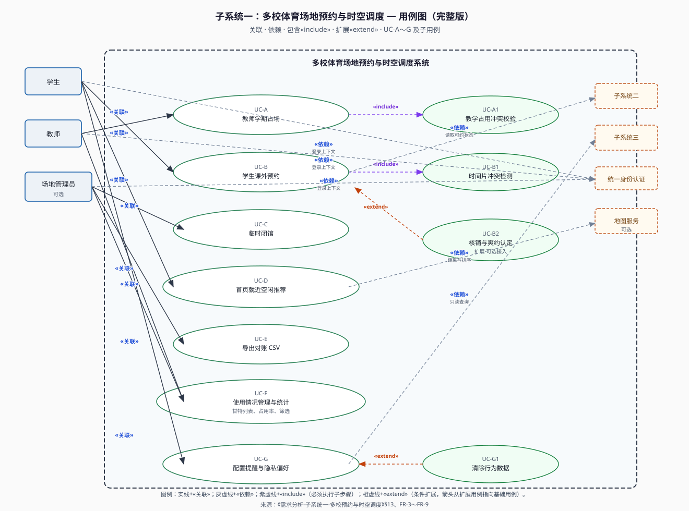
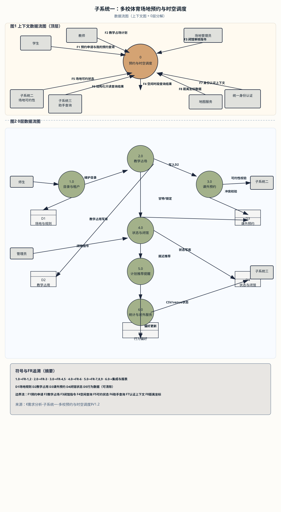
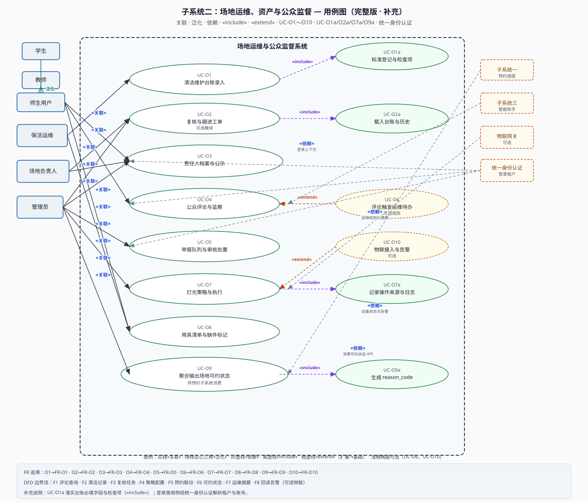

需求图表预览
子系统一、子系统二：用例图与数据流图（DFD）。子系统三仅列 DFD。在资源管理器中双击本文件即可本地预览；打印或「另存为 PDF」可交作业。
子系统一：多校体育场地预约与时空调度
用例图

usecase-subsystem-1-booking.svg数据流图（DFD）

dfd-subsystem-1-booking.svg子系统二：场地运维、资产与公众监督
用例图

usecase-subsystem-2-operations.svg数据流图（DFD）

dfd-subsystem-2-operations.svg子系统三：智能辅助与用户服务
数据流图（DFD）

dfd-subsystem-3-assistant.svg